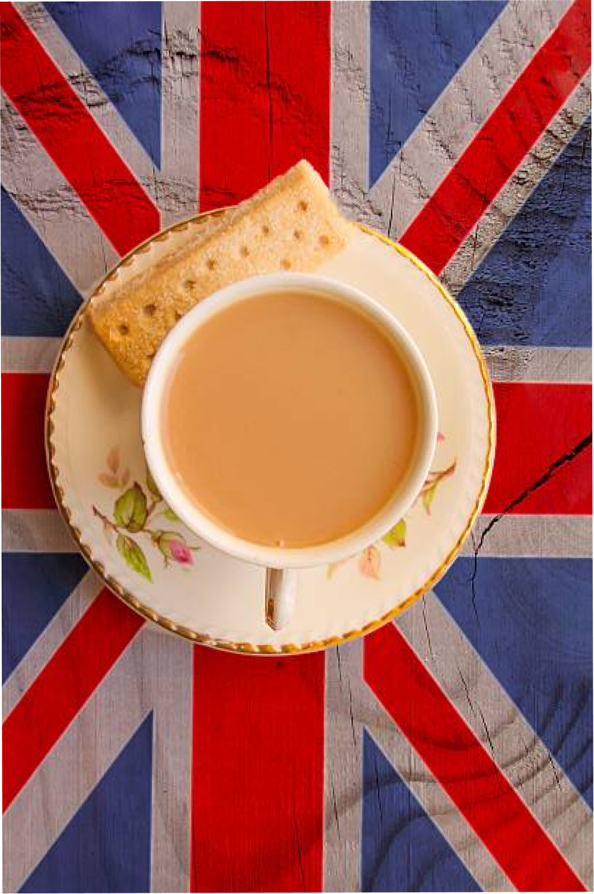
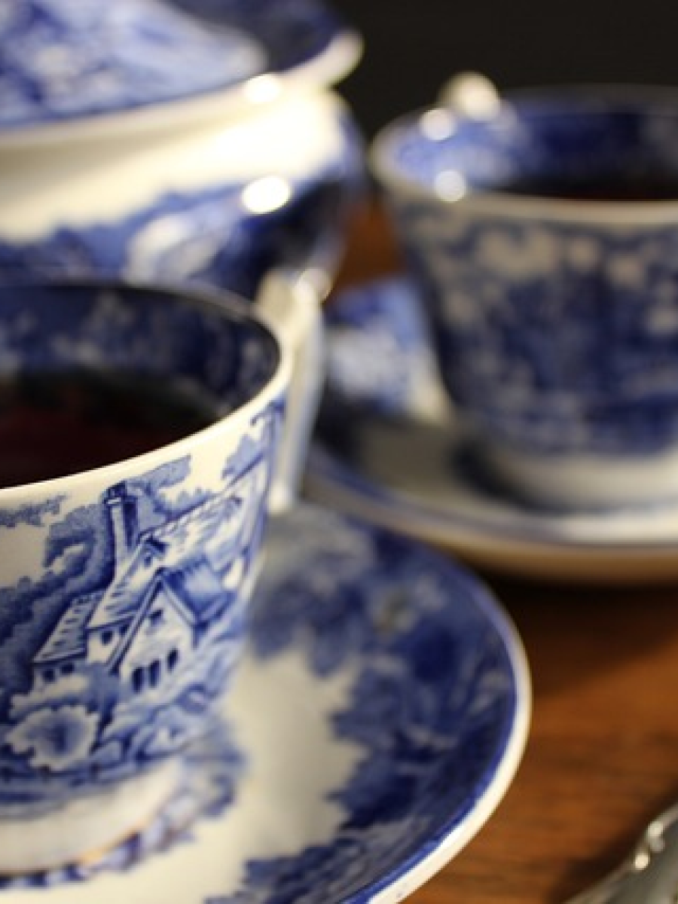
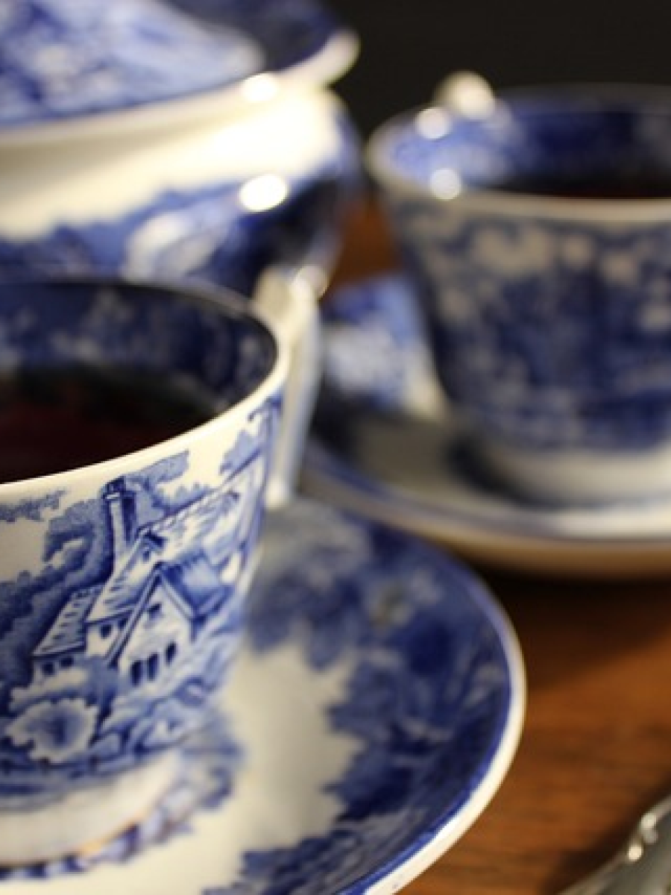
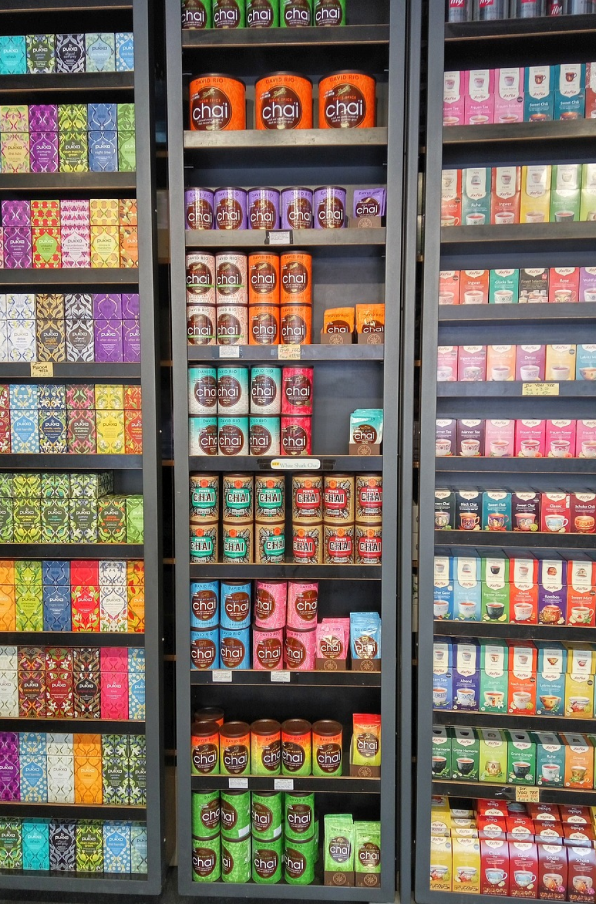

Sono presenti diversi stand che offrono una vasta selezione di tè provenienti da diverse regioni del mondo. I visitatori possono degustare e apprezzare la diversità dei sapori e degli aromi.
Oltre alle degustazioni, il festival offre un'ampia gamma di attività interattive, tra cui dimostrazioni di preparazione del tè, workshop sulla degustazione, presentazioni di esperti del settore e dimostrazioni di cerimonie del tè tradizionali.
Festival del tè a Londra
Il Festival del Tè di Londra avviene generalmente nel mese di Marzo, presso una delle sedi espositive di Londra, come il Business Design Centre o l'Olympia London.
L'atmosfera vibrante e stimolante del festival offre un'esperienza unica, permettendo ai partecipanti di esplorare un mondo di sapori, profumi e tradizioni legate al tè, e alla tipica cultura popolare londinese.
 

É possibile acquistare i biglietti online tramite il sito web ufficiale dell'evento, il prezzo può variare a seconda delle opzioni di accesso scelte, che possono includere l'accesso generale all'evento o l'accesso a particolari esperienze o workshop.
